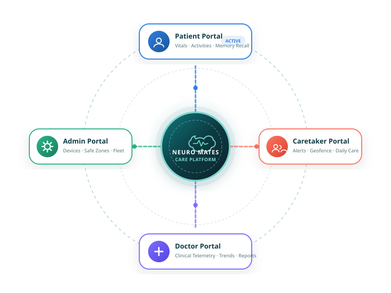

CONNECTED CARE PLATFORM
One connected platform for the people involved in care.

Illustration, not real patient data
Disease-specific activities, monitoring, reminders and personalised support designed around the patient's care journey.
Relevant alerts and information about the patient's activities, safety and care status.
Patient information and health reports to support ongoing monitoring and better-informed care.
Platform operational environment for relevant patient/user relationships, product/device configuration, safe-zone configuration for Alzheimer's, operational status and communication/alert environment.
ROLE-BASED ACCESS
Role-based access
The platform separates information and functions according to Patient, Caretaker, Doctor and Admin roles.